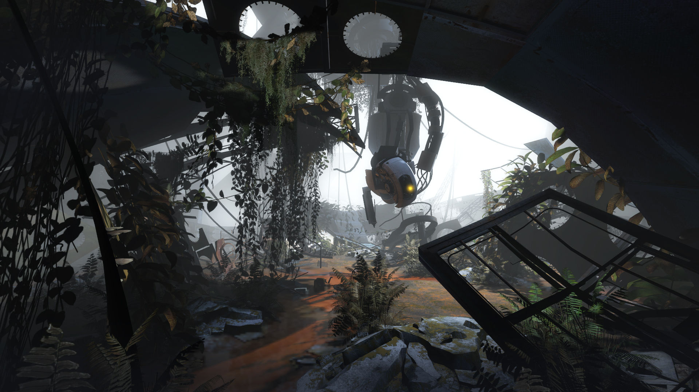

О ПРОЕКТЕ
Игры разные.
Выбор — твой.

Небольшой каталог с понятными правилами
«Следующая игра» помогает познакомиться с двенадцатью разными играми для ПК. Здесь можно искать по названию, выбирать жанр, настроение и кооператив, а интересные находки сохранять в избранное.
Это авторская подборка, а не рейтинг лучших игр. Мы не выставляем оценки, не продаём ключи и не обещаем, что каждая игра подойдёт всем.
Как пользоваться
- Открой каталог и выбери фильтры.
- Посмотри описание и особенности игры.
- Сохрани находку или перейди к официальной странице.
Приватность
Избранное хранится локально в браузере. Сайт не создаёт аккаунты и не отправляет этот список на сервер. Очистка данных браузера удалит сохранённые игры.